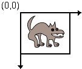

Feedback Form
|
|
Start of Tutorial > Start of Trail > Start of Lesson |
Search
Feedback Form |
The Java 2D system maintains two coordinate spaces.
- User space is the space in which graphics primitives are specified.
- Device space is the coordinate system of an output device, such as a screen, window, or a printer.
User space is a device-independent logical coordinate system: the coordinate space that your program uses. All geometries passed into Java 2D rendering routines are specified in user-space coordinates.
When the default transformation from user space to device space is used, the origin of user space is the upper-left corner of the component's drawing area. The x coordinate increases to the right, and the y coordinate increases downward, as shown in the following figure.
Device space is a device-dependent coordinate system that varies according to the target rendering device. Although the coordinate system for a window or the screen might be very different from that of a printer, these differences are invisible to Java programs. The necessary conversions between user space and device space are performed automatically during rendering.

|
|
Start of Tutorial > Start of Trail > Start of Lesson |
Search
Feedback Form |